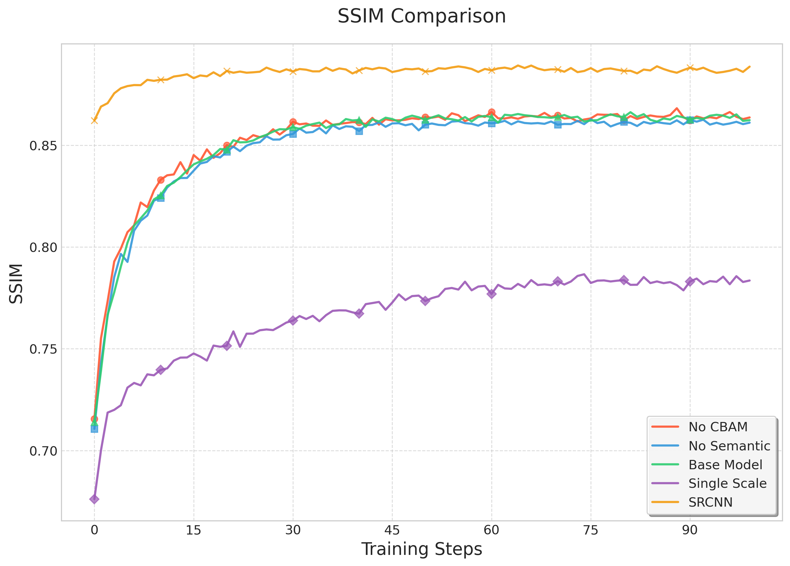

Comparison of learning rate schedules used during training. Note the logarithmic scale.
Training loss comparison across different models. Lower values indicate better training convergence.
Validation loss comparison, showing how well each model generalizes to unseen data.
Peak Signal-to-Noise Ratio (PSNR) on validation data. Higher values indicate better image quality.
Structural Similarity Index (SSIM) on validation data. Higher values indicate better perceptual quality.
